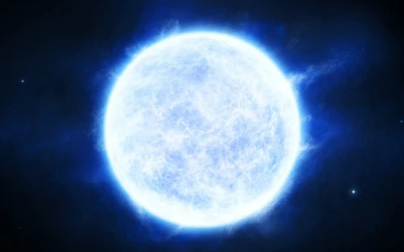
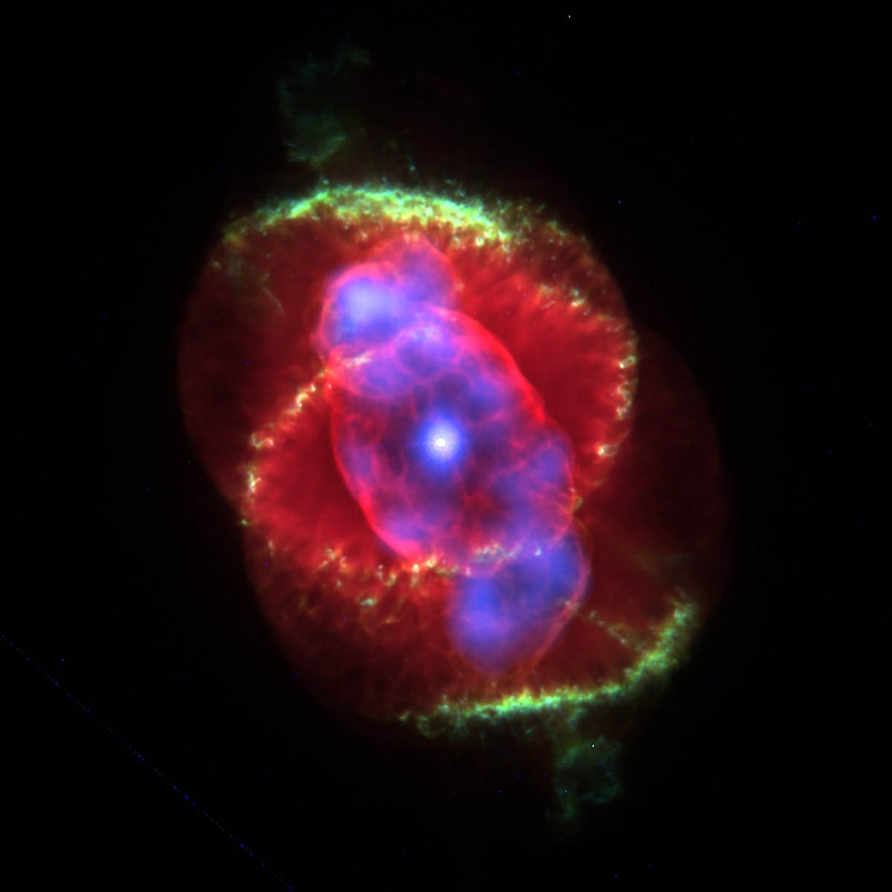
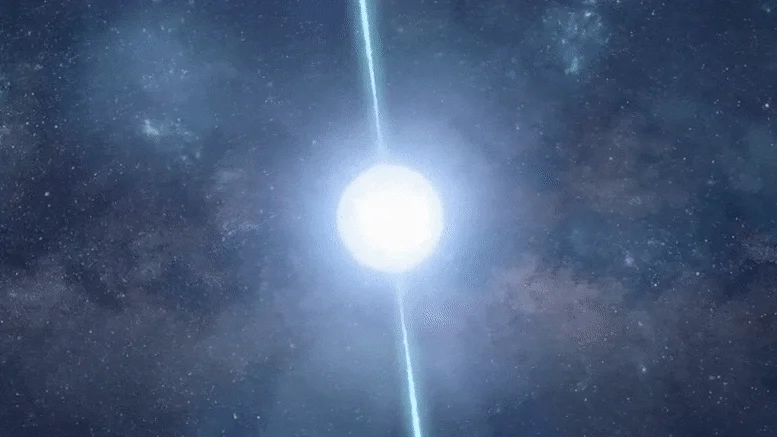
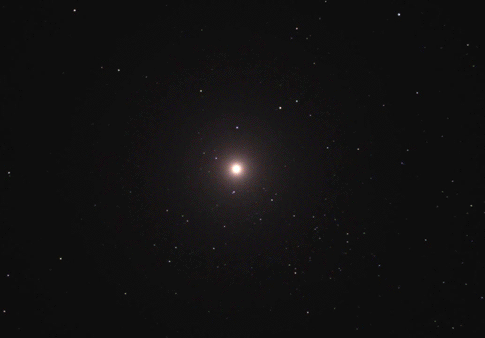
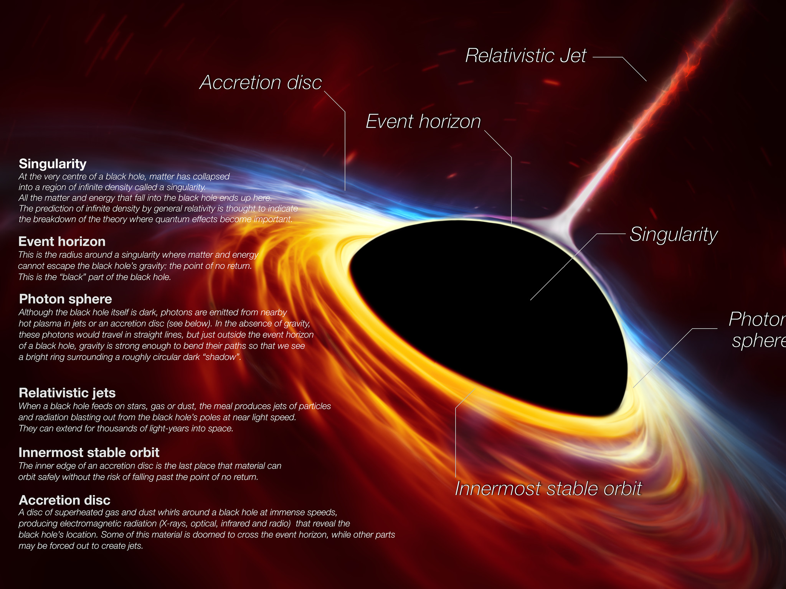
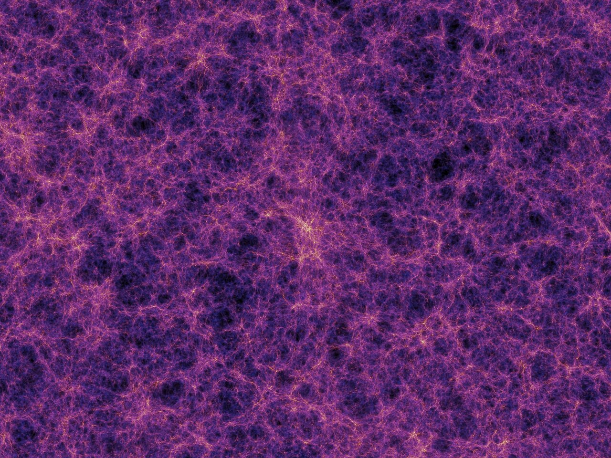
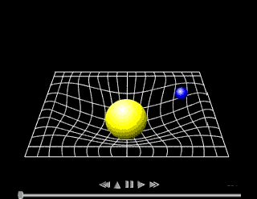
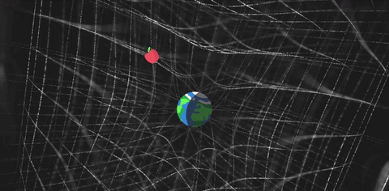
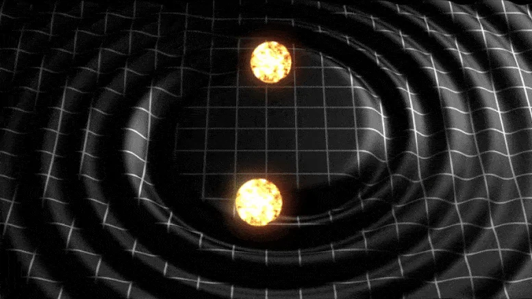

STARPEDIA
STARPEDIA
Stars are celestial bodies primarily composed of hydrogen and helium, where nuclear fusion in their cores transforms lighter elements into heavier ones, releasing energy. This process involves the fusion of hydrogen nuclei to form helium, generating light and heat. The star's gravitational collapse is counteracted by outward thermal pressure resulting from nuclear fusion, maintaining stability. Throughout a star's lifecycle, nucleosynthesis occurs, creating heavier elements through the r-process (rapid neutron capture) and the s-process (slow neutron capture). Neutron capture involves the absorption of neutrons by atomic nuclei, contributing to the formation of elements beyond helium.
A star's fate at the end of its life depends on its initial mass. (1 Solar mass = Mass of the Sun)


White Dwarf
Planetary Nebula


Neutron Star
Supernova

Parts of a black hole
The cosmic web is like a huge structure in space that shows how stuff is spread out across the universe. It's made up of big networks connecting dark matter and galaxies, kind of like a giant web. These networks create a pattern that looks like a web, with galaxies and dark matter connected like dots on the strands. Imagine it as a big cosmic quilt where galaxies are stitched together by invisible threads. This web shows how things are arranged in space on the largest scale. Scientists study it to understand how everything in the universe is connected and shaped by gravity.

The Cosmic Web
Formation of the Cosmic Web:
The cosmic web forms as a result of fluctuations in the early universe's matter density. Dark matter, affected by gravity, aggregates into halos, while gas is drawn into these regions, forming galaxies. The interconnected filaments of dark matter and gas create the cosmic web structure, with voids in less dense areas. Over billions of years, gravity amplifies these structures, leading to the large-scale pattern observed in the universe. This process is essential for understanding the universe's vast, filamentary structure.
Composition of the Cosmic Web:
Structure of the Cosmic Web:
Spacetime is a fundamental concept in the framework of Einstein's theory of General Relativity. Spacetime fabric is a 4 dimensional plane, 3 dimensions of space and 1 dimension of time. In classical physics, space and time were treated as separate entities. However, in General Relativity, Einstein proposed that these two aspects are interconnected, forming a unified spacetime.
Gravity explained using spacetime:
Massive objects like planets or stars create a "dip" in the spacetime fabric, like placing a heavy ball on a trampoline. Now, if you place a smaller object, like a marble, near the massive one, it will roll towards the larger object. This movement isn't a force acting at a distance (as in Newtonian gravity), but rather the smaller object following the curvature created by the massive object in the spacetime fabric. In essence, gravity is the result of objects moving along the curves of this warped spacetime, influencing their paths and trajectories, as seen below-

The representation of the curvature of spacetime given above is an extremely simplified version of it as it shows the fabric of spacetime in only 2 dimensions of space, length and breadth, not height. A better depiction of spacetime would be this, where spacetime is falling into the body with mass-

If you want to understand how the curvature of spacetime causes gravity with proper visuals, then here is a video with amazing visuals which will help you grasp how the curvature of spacetime results in gravity-
Gravitational Waves:
Gravitational waves are ripples in spacetime caused by certain types of accelerating masses. According to Einstein's theory of general relativity, massive objects, like merging black holes or neutron stars, create waves in the fabric of spacetime as they move. These waves propagate outward, carrying energy across the universe. Gravitational wave detectors on Earth, like LIGO and Virgo, can measure tiny changes in distance caused by these waves passing through, allowing scientists to observe and study extreme cosmic events that emit gravitational waves.

Visualization of Gravitational Waves
STARPEDIA